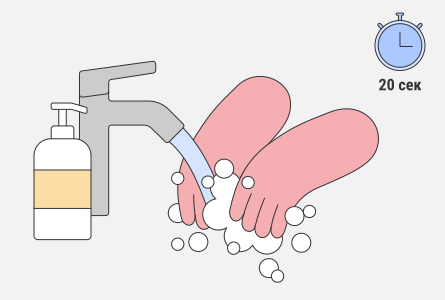
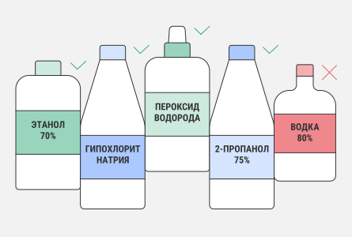
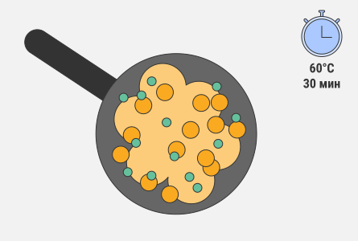
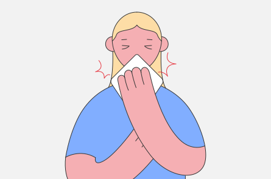
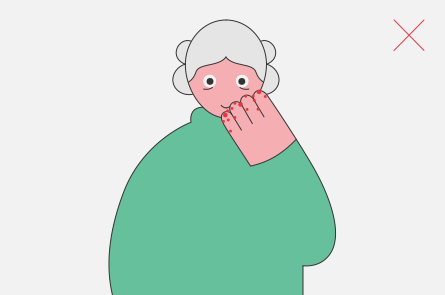
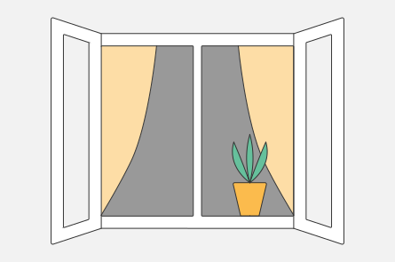
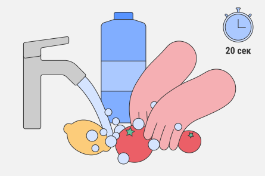
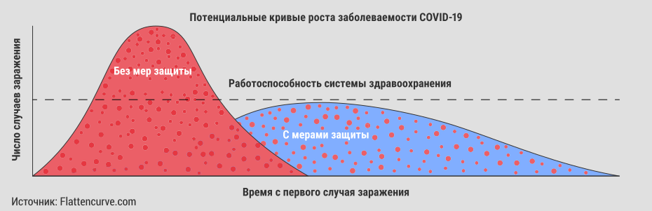
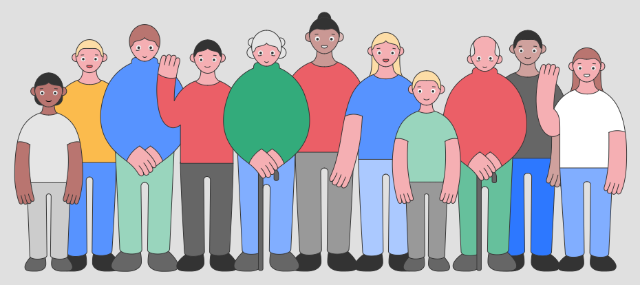

Коронавирус вызывает коронавирусную инфекцию под
названием COVID-19, в разговорной речи мы называем ее
коронавирусом.
Коронавирус передается с помощью невидимых
глазу капель, которые зараженный человек
распространяет при дыхании, разговоре, кашле или
чихании.
Вирус также передается через поверхности, к которым
прикасался зараженный или на которые попали частицы
вируса.
В закрытом помещении частицы вируса могут
преодолевать по воздуху до 2 метров. При комнатной
температуре и в относительной влажности в 40% вирус
может прожить до 4-5 дней. Чем выше температура и
относительная влажность, тем быстрее погибает вирус.
Каждый зараженный коронавирусом человек в среднем
способен заразить 2 (точнее – 2-2,5) человек.
Каждый из них, в свою очередь, заражает двоих и более людей и
т.д.
Чем больше зараженный контактирует с окружающими
, тем вероятнее, что заразится кто-то еще и тем большим
будет их число. Известно, что в Южной Корее один из
переносчиков коронавируса заразил 70 человек.
Это приводит к стремительному распространению
инфекции: от одного зараженного уже на третьем
круге заразится от семи до десяти человек, а к
десятому – 57 000!
Коронавирус гораздо заразнее гриппа!
Человек с коронавирусом, как правило, испытывает один
или несколько симптомов из этого списка: жар, сухой
кашель, недомогание, выделение мокроты,
затрудненное дыхание, боли в мышцах и суставах,
боль в горле, головная боль.
Чаще всего встречаются жар, кашель и затрудненное
дыхание. Тем не менее, люди с коронавирусом могут
испытывать разные симптомы. Человек может быть
заражен, несмотря на то, что у него легкие симптомы или
их вовсе нет и человек чувствует себя здоровым.
Если у вас жар, кашель или вам трудно дышать, сразу же
свяжитесь с семейным врачом или вызовите скорую.
Инкубационный период заболевания составляет от 2 до 14 дней, в среднем – 5 дней. Это значит, что столько времени может пройти с момента заражения до того, как человек ощутит недомогание и появятся первые симптомы. В этот отрезок времени человек и сам не знает, что может кого-то заразить.
Большинство людей переносит коронавирус в легкой форме, но у старшего поколения и людей с хроническими заболеваниями болезнь может протекать тяжелее – они могут оказаться в больнице или даже умереть. В то же время, и в Эстонии были случаи, когда молодые и в целом здоровые люди тяжело переносили коронавирус.
Установлено, что есть люди, зараженные коронавирусом и инфекционно опасные для окружающих, но они чувствуют себя совершенно здоровыми и не выказывают ни единого симптома.
Поэтому осторожность нужно соблюдать всем, ведь каждый из нас может быть заражен и по незнанию распространять вирус.
Заболевший коронавирусом человек может быть заразен до 14 дней с момента проявления симптомов. Поэтому нужно остаться дома на 14 дней после возникновения симптомов.В этот период выходить из дома нельзя совсем. Даже если симптомы заболевания отступят раньше. Карантин позволяет предотвратить распространение инфекции.
Лучше всего частицы вируса уничтожает мытье рук теплой водой и мылом как минимум 20 секунд. Руки нужно мыть часто и тщательно, ведь частицы вируса могут оставаться между пальцев, на тыльной стороне рук и под ногтями.
Также очень важно хорошо высушить руки, по возможности – бумажным полотенцем.
Если руки помыть негде, например, в общественном месте, воспользуйтесь антисептиком на спирту (антисептик должен содержать не меньше 70% алкоголя).
Поддерживайте порядок в доме и регулярно протирайте поверхности. Осмотритесь и подумайте, что чаще всего трогают руками, особенно грязными – ручки дверей, перила, кнопки лифтов, выключатели, спинки стульев, поверхности в ванной и санузле, дозатор мыла и т.п.
Лучший способ – влажная уборка тряпкой и моющим средством. Если такой возможности нет, воспользуйтесь специальными антисептиками с содержанием алкоголя не менее 70%
Антисептик должен успеть подействовать, поэтому не стирайте его сразу. Оставьте средство на поверхности на время, указанное на упаковке, или хотя бы на одну минуту.
Через хорошо прогретую – вареную, жареную, запеченную – пищу заразиться коронавирусом нельзя. Известно, что его частицы погибают под получасовым воздействием температуры в 60°C.
Закрывать рот ладонью бессмысленно, ведь через руки инфекция быстро распространится. Использованный носовой платок – настоящий рассадник вирусов и бактерий. Пользуйтесь бумажными салфетками и выбрасывайте их в мусорный бак сразу после использования.
Так вы избежите попадания вируса на слизистые с поверхности рук.
Проветривание комнат очищает и освежает воздух.
Нужно тщательно промывать теплой водой все овощи, фрукты и ягоды. Также нужно хорошо промыть или обеззаразить магазинную упаковку.
Требование оставаться дома – это мера предосторожности, необходимая для остановки эпидемии. Поскольку зараженный коронавирусом не всегда испытывает симптомы и может считать себя здоровым, очень важно, чтобы все оставались дома.
Выходя из дома, соблюдайте правило «2+2» – передвигаться можно по одному или по двое и держаться на расстоянии в 2 метра от окружающих. Это правило действует, например+, в продуктовом магазине и на прогулках.
Выходить из дома больным категорически запрещено. Чем меньше людей перемещается вне дома и контактирует друг с другом, тем ниже риск заражения и тем быстрее могут быть отменены ограничения!
В общественных местах – магазинах, аптеках, медицинских учреждениях, общественном транспорте – безопаснее надевать защитную маску.
Маска защищает не только вас, но и окружающих – ношение маски позволяет снизить риск заражения других людей при кашле или чихании.
Маску может носить каждый, ведь никогда не знаешь, болен ты или нет.
Носить маску дома или на улице бессмысленно, если только кто-то из домашних не заболел. Тогда рекомендуется носить респираторы класса защиты FFP3.
Маска должна плотно прилегать к лицу, закрывая рот и нос. Старайтесь не трогать руками маску и лицо. Влажную маску нужно выбросить. Использованные маски осторожно сложите в пакетик и завяжите.
Многоразовые текстильные маски нужно стирать в горячей воде при 65-90 градусах.
Эти меры направлены на то, чтобы остановить распространение коронавируса. Хоть некоторые и переносят коронавирус в легкой форме, у многих болезнь протекает очень тяжело. Соблюдая правила гигиены, оставаясь дома и избегая контактов с окружающими, вы помогаете остановить эпидемию.
Исполнение требований и рекомендаций с одной стороны помогает больницам и врачам оказать помощь всем, кто в ней нуждается. С другой стороны, это помогает не заболеть каждому из нас и нашим близким.
